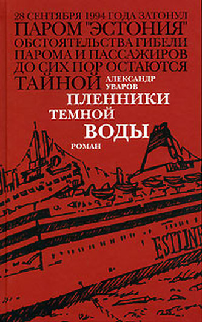

Александр Уваров • Пленники темной воды • вне серий • 17.04.2006

В 1980 году на верфи “Мейер” в немецком городе Папенбурге был построен паром, который через 14 лет вошел в историю под именем “балтийский Титаник”. В ночь с 27 на 28 сентября 1994 года паром “Эстония” затонул в штормовом Балтийском море на полпути между Таллинном и Стокгольмом. Это пожалуй единственное, что нам достоверно известно. Предлагаемый вниманию читателей роман – одно из немногих художественных произведений, рассказывающих о неизвестных доселе событиях, предшествующих этой катастрофе.
ПРЕССА И КОНТЕКСТ
Презентация нового романа Александра Уварова “Пленники темной воды” (05.05.2006)
11 мая в 19 часов , в зале “Афиша” конференц-центра Extropolis, пройдет презентация нового романа Александра Уварова “Пленники темной воды”.
Роман Александра Уварова «Пленники темной воды» о гибели «балтийского Титаника» — одно из немногих художественных произведений (а может быть, пока и единственное в своем роде), которое рассказывает о неизвестных доселе событиях, предшествовавших одной из величайших морских катастроф конца двадцатого столетия.
Паром “Эстония” затонул в ночь с 27 на 28 сентября 1994 года в штормовом Балтийском море на полпути между Таллинном и Стокгольмом. Это, пожалуй, единственное, что известно достоверно. Загадка «балтийского Титаника» до сих пор остается под водой.
Роман, написанный в форме документального детектива, естественно, не является результатом официального расследования катастрофы, унесшей 852 жизни. Это художественное произведение, не лишённое, конечно же, элемента фантазии и авторского осмысления обстоятельств, предшествовавших и, возможно, приведших к катастрофе.
В романе паром называется «Балтия»…
Адрес: Трёхпрудный переулок, д. 9 (ст. метро “Маяковская”).
Дополнительная информация по конференц-центру: www.extropolis.ru
ПРИГЛАШАЮТСЯ ВСЕ
См. так же :: Сайт Александра Уварова :: http://uvarov.biz
Детектив об «Эстонии» (Любовь МЕЙНЕРТ, Молодежь Эстонии, 31.05.2006)
Гибель парома «Эстония» стала сюжетом детективного романа. Разумеется, изданного в России. Но вопреки возможным ожиданиям от российского автора Эстония (не паром, конечно же, а страна) представлена в нем далеко не самым мрачным образом. Даже скорее наоборот — монстром и источником всяческих напастей выглядит не она, а Россия. Точнее, российские спецслужбы.
Фабула понятна и предсказуема — да и что иное уложилось бы в русло детектива? В хитросплетениях сложного заговора по отправке за рубеж оставшегося на эстонских складах секретного оружия, «позабытого» Советской армией, паром «Эстония» намечается в качестве одного из возможных каналов транспортировки, хотя на самом деле ничего не везет. Тем не менее его все-таки взрывают «нехорошие российские дяди» для острастки и шантажа молодой независимой страны.
Явная симпатия к Эстонии и некоторая агрессивность по отношению к «бандитской» России могут объясняться как личностью автора, так и спецификой издательства, его произведение опубликовавшего. Автор — Александр Уваров — известен своими «нигилистическими» романами-страшилками с вызывающим анархистским уклоном. Во всяком случае, заметной лояльностью к властям он никогда не отличался. Кроме того, Уваров долгое время проживал в Эстонии, в том самом пресловутом Палдиски, которое эпизодически упоминается в его романе. Поэтому эстонские реалии ему понятны, и это чувствуется. Относится к ним автор с явной симпатией. И еще: по роду своей работы Уваров в прошлом был связан с ФАПСИ (Российским Федеральным агентством правительственной связи), поэтому не приходится удивляться технической тонкости некоторых «конфиденциальных» описаний в детективном сюжете.
Столь же неоднозначно, как и автор, выглядит издательство — «Ультра.Культура». Реально базируется оно в Москве, хотя значительную часть своих книг печатает в Екатеринбурге, там же оформлен официальный юридический адрес. Выпускаемые издательством книги — это нечто, явно не способное вписаться в нынешний российский официоз. При любых выпадах по поводу «зажима» демократии в России достаточно ткнуть пальцем в «Ультра.Культурный» каталог, чтобы подтвердить наличие «свободы слова». Чего стоят, например, двухтомная «Антология анархизма» или биография Джохара Дудаева, написанная его женой Аллой Дудаевой для серии «Жизнь запрещенных людей» (по аналогии со знаменитой советской серией «Жизнь замечательных людей», основанной Максимом Горьким еще в 30-е годы прошлого столетия). Надо ли добавлять, что издательство постоянно вовлекается в различные конфликты с «органами»: то за якобы порнографию (из-за романов английского писателя Мелвина Берджесса, Melvin Burgess), то за пропаганду насилия и национальной вражды. Судебные процессы и запреты тиражей в работе издательства стали уже почти рутиной. Поэтому от него тоже не приходится ожидать особого восхваления великодержавных российских замашек. А в принятую издательством концепцию критики неурядиц в России роман Уварова укладывается вполне.
Помимо всего прочего, детектив просто-напросто неплохо читается и даже по-своему захватывает. Хотя, конечно, авторская версия выглядит все-таки маловероятной. Но на то и роман, чтобы открывать границы для писательской фантазии. И кто знает, где правда на самом деле?
Официальная презентация романа Александра Уварова «Пленники темной воды» состоялась в Москве 11 мая.
(Учитывая «литературность» сюжета, паром «Эстония» в романе назван «Балтия», но титульная страница напрямую отсылает к реальным событиям.)